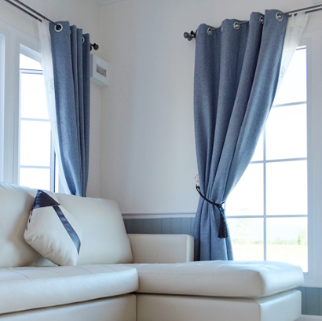

If your room feels flat, glossy curtains are the glow-up you’re missing. They bounce light, elevate vibes, and instantly make spaces look more premium—without wrecking your budget. In Bangladesh, glossy curtain prices vary based on fabric, finish, and size.
Whether it’s your living room, bedroom, office, or event space, glossy curtains are a power move when you want elegance without going overboard. At Curtivelle, we provide premium fabric materials, excellent customer service, and the most competitive pricing.
Call for DetailsTypes of glossy curtain in Bangladesh
Not all glossy curtains are built the same. Different fabrics bring different levels of shine, durability, and mood. Before checking price tags, you need to know which type fits your space and lifestyle. Below are the most popular glossy curtain types available in Bangladesh right now:
Silk glossy curtainsSilk glossy curtains are the definition of luxury. They have a natural sheen, soft flow, and rich texture that screams high-end. These are ideal for formal living rooms or master bedrooms, but heads-up—they’re pricey and need gentle care. |
Satin glossy curtainsSatin gives you that smooth, mirror-like shine without the crazy silk price. It drapes beautifully and works great for bedrooms and modern interiors. Satin is a top pick in Bangladesh because it balances looks, durability, and cost. |
Polyester glossy curtainsPolyester glossy curtains are budget-friendly, durable, and low maintenance. The shine is more controlled, but still stylish. If you want glossy vibes without stressing about washing or fading, this one’s a safe bet. |
Velvet glossy curtainsVelvet brings depth and a soft glow rather than sharp shine. It’s heavy, dramatic, and perfect for luxury homes, hotels, or stage setups. Velvet glossy curtains also help with insulation and sound control. |
What affects glossy curtain price?
Glossy curtain prices depend on a few core factors that directly impact quality, durability, and overall look. Knowing these helps you avoid overpaying and choose what actually fits your space.
- Fabric Quality: Silk and premium satin cost more than polyester blends. Period.
- Gloss Finish: Higher shine, better coating, higher price. Cheap gloss fades fast.
- Size & Stitching: Custom sizes and tailored stitching increase cost.
- Design & Brand: Imported designs or trusted brands charge a premium—for a reason.
- Lining & Accessories: Blackout lining, rings, and tiebacks add to the bill.
How to choose the right glossy curtains?
Buying glossy curtains without a plan is how you end up with sunlight overload. It's about matching function with aesthetics. Get this wrong, and your room can look tacky instead of classy. You need to understand the below points before buying:
- Match the Room: Bedrooms = soft satin. Living rooms = satin or silk. Events = metallic.
- Control the Shine: Too glossy in bright rooms can look loud. Balance matters.
- Color Game: Light colors reflect more; dark tones feel richer and more controlled.
- Maintenance Check: If you hate dry cleaning, skip pure silk. Polyester wins here.
- Measure First: Wrong size ruins the look—no excuses.
Buy Glossy Curtains from Curtivelle
If you want glossy curtains that actually look good after installation (and not just in photos), Curtivelle is the move. We provide every type of curtain found in Bangladesh, including style-based, interior-based, and seasonal curtains. We focus on quality fabrics, clean stitching, and modern designs. Why Curtivelle hits differently:
- Numerous textiles and designs
- Customized measurements for the perfect fit
- Lining and blackout options are not required
- Skilled curtain consultation
- Neat stitching, contemporary finishing, and no shortcuts
FAQ about glossy curtains
What is the average glossy curtain price in Bangladesh?
Glossy curtain prices usually start from around ৳250 per panel for polyester and can go up to ৳2,000+ for silk or premium satin. Final cost depends on fabric, size, and finish.
Are glossy curtains suitable for bedrooms?
Yes—but choose wisely. Satin or low-sheen glossy curtains work best for bedrooms because they look elegant without reflecting too much light. Avoid heavy metallic shine in sleeping spaces.
Do glossy curtains fade or lose shine over time?
Cheap ones do. Quality glossy curtains with proper coating and fabric hold their shine for years if you avoid harsh washing and direct sun exposure all day.
Are glossy curtains easy to maintain?
Polyester glossy curtains are low-maintenance and washable. Satin needs gentle care, while silk usually requires dry cleaning. If you want stress-free, polyester is the safe pick.
Why should I buy glossy curtains from Curtivelle?
Because you get consistent fabric quality, proper stitching, fair pricing, and designs that actually match modern Bangladeshi interiors—no hit-or-miss nonsense.